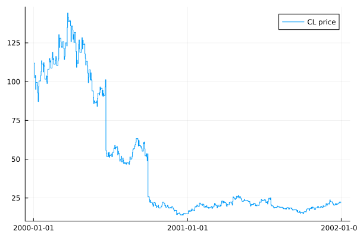
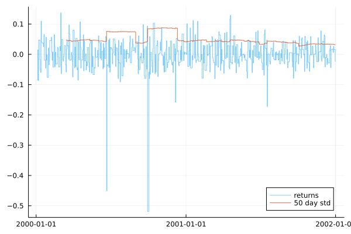
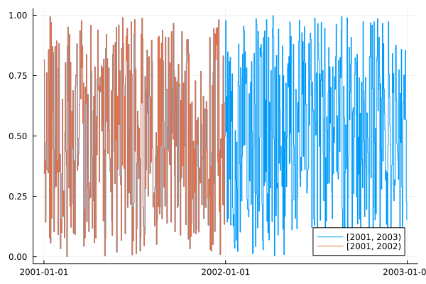
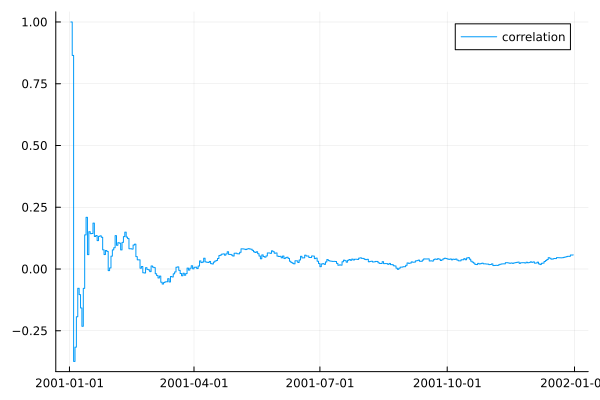

Examples
The following examples demonstrate some of the basic functionality in TimeDag.
Concrete data
We represent concrete time-series data with instances of Block. Let's create one now, using daily price data for crude oil from MarketData.jl.
using Dates
using MarketData: cl, timestamp, values
using Plots
using TimeDag
block = Block(DateTime.(timestamp(cl)), values(cl))Block{Float64}(500 knots)
| time | value |
| Dates.DateTime | Float64 |
|---------------------|---------|
| 2000-01-03T00:00:00 | 111.94 |
| 2000-01-04T00:00:00 | 102.5 |
| 2000-01-05T00:00:00 | 104.0 |
| 2000-01-06T00:00:00 | 95.0 |
| 2000-01-07T00:00:00 | 99.5 |
| 2000-01-10T00:00:00 | 97.75 |
| 2000-01-11T00:00:00 | 92.75 |
| 2000-01-12T00:00:00 | 87.19 |
| 2000-01-13T00:00:00 | 96.75 |
| 2000-01-14T00:00:00 | 100.44 |
| 2000-01-18T00:00:00 | 103.94 |
| 2000-01-19T00:00:00 | 106.56 |
| 2000-01-20T00:00:00 | 113.5 |
| 2000-01-21T00:00:00 | 111.31 |
| 2000-01-24T00:00:00 | 106.25 |
| 2000-01-25T00:00:00 | 112.25 |
| ⋮ | ⋮ |
484 rows omitted
Above it is represented in a raw table-like form.[1] We can see that this block has values of type Float64. For Blocks with numeric value types, we can use the included plot recipe to visualise them:
plot(block; label="CL price")
Creating nodes
The core of TimeDag is a computational graph of TimeDag.Nodes. These nodes represent time-series, and how they should be computed in terms of other time-series.
We can create a node from the block of data we already have:
price = block_node(block)BlockNode{Float64}The node knows its value_type, which will be Float64 (since the values will just be those of the block we created earlier).
value_type(price)Float64Now let's perform some computation — let's estimate the 50 day rolling standard deviation of returns.
We start by computing relative returns using lag; given a price $p_t$ at time $t$, the return series is $r_t = \frac{p_t - p_{t-1}}{p_{t-1}}$. We then use Statistics.std to define an online standard deviation over the specified window.
returns = (price - lag(price, 1)) / lag(price, 1)
using Statistics
std_50 = std(returns, 50)TimeDag.SimpleUnary{sqrt, true, Float64}()Whilst it isn't normally necessary to inspect the graph by hand, we can visualise it with AbstractTrees.print_tree. This is often good enough for a simple text-based representation, but be aware that actually we have a graph, and not a tree. In the output, the Lag node appears twice, however it is in fact exactly the same object.
using AbstractTrees
print_tree(std_50)SimpleUnary{sqrt, true, Float64}()
└─ WindowVar{Float64}(50)
└─ SimpleBinary{/, true, Float64, UnionAlignment}()
├─ SimpleBinary{-, true, Float64, UnionAlignment}()
│ ├─ BlockNode{Float64}
│ └─ Lag{Float64}(1)
│ └─ BlockNode{Float64}
└─ Lag{Float64}(1)
└─ BlockNode{Float64}Now that we have defined our computation, we can evaluate it to form a concrete time-series. We use evaluate, and here we pass in a time range that covers all our input-data.
By evaluating both returns and std_50 in the same call, note that we do not duplicate work. (See Advanced evaluation for further discussion on this.)
returns_block, std_50_block = evaluate([returns, std_50], DateTime(2000), DateTime(2003))
plot(returns_block; alpha=0.5, label="returns")
plot!(std_50_block; label="50 day std")
Other sources
The example so far has used a source node that simply wraps data that is already held in memory. More interesting cases are nodes that read or generate their data only when evaluated.
Here we use Base.rand to generate a stream of random numbers. It produces a value whenever its argument ticks — in this case, iterdates will tick once a day at midnight.[2]
It is good practice to consider this time to always be in UTC.
x = rand(iterdates())
plot(evaluate(x, DateTime(2001), DateTime(2003)); label="[2001, 2003)")
plot!(evaluate(x, DateTime(2001), DateTime(2002)); label="[2001, 2002)")
There are a couple of interesting things to note here:
- We can generate more data by evaluating over a longer range.
- So long as we start at the same time, we get exactly the same random numbers.
This second property is a general property of node evaluation — repeated evaluation should always give the same answer.
Finally, we show the correlation for two random numbers over an expanding window. As expected, it converges towards zero as more data is observed:
y = rand(iterdates())
correlation = cor(x, y)
plot(evaluate(correlation, DateTime(2001), DateTime(2002)); label="correlation")
Information on other source nodes included with TimeDag is available in Sources. If you wish to create your own source nodes, e.g. to read data directly from a database table, refer to Creating sources.